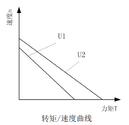
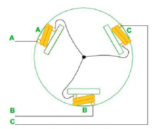
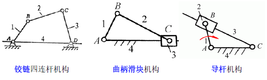
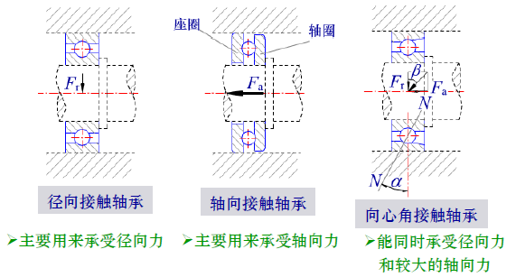

Robotics
Sensors
Definition
定量感知环境特定物质属性（物理、化学量）的电子、机械、化学设备，将其精确转化为电信号，由电子电路/计算机进行信号分析和处理。
Classification
Inner Sensors
测量自身状态 底层？运动控制 - 电位器 - 发电机 - 加速度计 - 倾斜仪 - 陀螺仪 - 力/力矩传感器
Outer Sensors
测量所处环境 部分底层、部分上层运动规划 - 视觉 - 触觉 - 接近觉-障碍检测、距离 - 热觉-温度 - 嗅觉 - 听觉 - 味觉 - 力觉-力和力矩
Characteristics
Static
输出相对于输入保持一定的对应关系
- 灵敏度
- 信噪比（S/N，signal/noise）
- 线性
- 稳定性：恒定漂移，温漂和领漂
- 精度：准确度、精密度
Dynamic
相应特性
- 瞬态响应特性
- 频率响应特性
Selection Criterion
- 测量条件
- 传感器性能
- 成本、尺寸、重量
- 使用条件
Details and Examples
运动传感器
- 电位器
- 功能：将线位移、角位移转换为电阻变化，检测电压输出
- 类别：直线式（线位移）、旋转式（角位移）
- 使用：单独使用、与编码器一起使用（建策关节和连杆的位置）

- 编码器
- 测量介质：光电码盘、磁编码盘
- 增量式(方波数测位移、方波周期测速度)
- 体积小、价格低、抗干扰能力弱
- 不能知道方向，需要加装方向辨别电路
- 绝对式（只能测位置）
- 体积大、价格高、抗干扰能力强
- 码盘与位置一一对应
- 改进型：两个，岔开很小的差距，可以知道方向
Replacement = Nd/\alpha
$d$
where N denotes the number of waves, d denotes high pulse width, $\alpha$ denotes the duty ratio.
$$ \alpha T = \frac{d}{\omega R_0} \Rightarrow \omega = \frac{d}{\alpha TR_0} $$

- 速度传感器
- 编码器测量：
- 统计指定时间内的脉冲信号
- 测量相邻脉冲的时间间隔

- 加速度传感器
- 利用加速度造成某个介质变形，通过测量其变形量并用相关电路转化成电压输出
方位角传感器
- 测量方向和倾角、位姿估计
- 指南针（绝对方向）
- 霍尔指南针（霍尔效应）
- 分辨率低、精度低、体积小、价格低
- 磁通门罗盘（电磁感应原理）
- 两者都易受磁性物质（电机）的干扰
- 屏蔽的话会把地磁场屏蔽
- 陀螺仪（角速度）
- 机械陀螺仪
- 旋转轮高速旋转，有巨大的角动量，且外枢轴力矩无法传送到轮轴上，使轴保持稳定
- 工艺要求很高、结构复杂
- 光纤陀螺仪
- 基本原理：光速不变、光干涉
- 检测相位差、干涉条纹变化
- 结构紧凑、灵敏度高、工作可靠
- MEMS陀螺仪
- 实现设备的小型化
- 航向角会产生偏差
- 体积小、重量轻、低成本、高可靠性、低功耗、大量程、数字化
测距传感器
粗略的距离感觉
- 光学接近觉传感器
- 对置式：红外发光二极管接收红外光，输出光电流
- 可靠性好
- 回波式：巡线传感器，检测黑线白线
- 超声波接近觉传感器
- 对置式
- 回波式：$distance=t\cdot v/2$
- 主要问题：
- 传输速度低，降低感知能力（$0.3m/ms$对单片机比较合适 while $c=0.3m/ns$）
- 锥形方式传播，有张开角，细小物体难以感知，无法分辨方向、物体尺寸，无人驾驶领域很不适合。
- 软的物体会吸收大量能量
- 光滑的物体表面会形成镜面反射
- 激光测距仪
- 发射光束和接受光束同轴
- 三角法：超过5m以上精度不够（远距离分辨率不够）
- 时飞法：$\Delta t=\Delta s/c=0.01/(3\cdot 10^8m/s)=33.4\cdot 10^{-12}s$，需要精确的时钟
- 间接相位偏移测量法：连续波（不同波长），比较反射信号和发送信号的相位差
- $$D=\frac{\Delta \phi \lambda}{4\pi}=\frac{\Delta \phi v}{4\pi f}$$
- 二维->三维：270->360，0.25度->0.09度，最大可测距离80m->120m精度高
力觉传感器
- 压阻式（应力导致电阻变化，反变化）
- 压电式（应力导致电压）
- 电容式（压力导致电容器基板间距变化，导致电容变化）
力矩传感器
- 力矩，使轴扭曲变形，存在剪切应变和应力
- 应用：关节驱动器测力和力矩、末端执行器（腕力传感器）、手爪指关节（指力传感器）
视觉传感器
- 三维环境-光学元器件（镜头，采光）-成像元器件（CCD/CMOS，采二维图像）-图像采集卡（采电信号）-计算机（数字图像）
Driving Principle
Electrically Driving
优点：控制调节简单，稳定性较好 缺点：力矩小、刚度低，需要配合减速器（舵机）
电机工作原理
- 直流电机
- 输出力矩、速度两个指标
- 电枢电动势$E_a=K_e n \varpropto n \varpropto \omega$, where $n$ is rotate speed.
- 电磁转矩$\tau=K_m I \varpropto I$, where $I$ is electric current of armature.
- 输出功率$P=E_a\cdot I\varpropto \tau \cdot \omega$, that is, 力矩（转矩）和转速在同一电压下相互制约。
- 
- 斜率的绝对值越小（越平缓），刚性越好
- 需要驱动芯片
- 检查电机是否烧坏，可以测量任意两相之间的电阻，和出厂时做对比
- 直流有刷电机：磁极为定子，电枢绕组为转子，需要换向片
- 直流无刷电机：电枢为定子，永磁体为转子，电子换向器（编码器）
- 三相星形联结（Y型）的二二导通最为常见
- 
- 换相：AB->AC->BC->BA->CA->CB(两个逆时针)
- 换相条件只与转子的位置（位置传感器检测，如光电编码器、霍尔传感器，单片机控制）有关，与速度无关

- 三相9绕组6极（而非6组6极，防止定子的齿和转子的磁钢相吸而对齐，防止转矩的波动）
- 电机的控制与仿真（外部特征，即输入输出）
- 直流电机电枢等效电路方程：
- 电压平衡方程
- $$u_a(t)=R_ai_a(t)+L_a\frac{di_a(t)}{dt}+E_a{t}$$
- 感应电动势方程
- $$E_a(t)=K_e\omega$$
- 电磁转矩方程
- $$T(t)=K_mi_a(t)$$
- 转矩平衡方程
- $$T(t)=J\frac{d\omega(t)}{dt}+B\omega(t)+T_d(t)$$
- where $J$, $B$ 是等效到电机轴上的转动惯量和阻尼系数，$T_d(t)$是电机空载转矩和负载等效到电机轴上的转矩之和。
- 转动惯量的匹配

- 非接触负载转动惯量传递到主动轴上时，要除以传动比$i^2$(缩减很多)。反之，在负载上看电机的转动惯量，要乘以传动比$i^2$（增大很多）
- 高动态伺服系统$J_{Motor}<(2-3)J_{Load}$
舵机
- 角度、位置伺服
- PWM->控制电路->电机+齿轮组->比例电位器（检测角度）->反馈
- 比例电位器：将转角坐标（电阻）转换为电压输出->控制板
- 三条控制线：电源线（power red）、地线（ground black）、控制线（signal yellow）
- 电机+减速器：减速、增加力量、改变方向
- PWM（脉冲宽度调制，由单片机生成）波控制（从控制线输入）：改变电机电枢的电压占空比来控制转速
- 记电机占空比为$D=t_1/T$，当$D=1$时的转速记为$V_{max}$，则电机的平均速度为
- $$V_d=V_{max}\cdot D$$
- 即，电机的转速和占空比成正比。
- 舵机转动的角度也由PWM波控制实现，也是线性关系$\theta \varpropto D$。PWM周期为20ms，脉宽分布0.5-2.5ms。不同脉宽对应不同转角位置。一般做不到360度.
- 模拟舵机（体积大，接线多）、数字舵机（总线方式，120多个）
电机驱动
- 有刷电机H桥驱动
- 驱动芯片（低电位开，高电位关）-三极管（二极管防反向电动势）
- L298 输出电流达2.5A，可驱动两个电机
- 易受干扰，采用光电耦合器的抗干扰电路
Gas Driving
优点：气源获得方便、成本低、动作快 缺点：输出功率小，体积法，且噪声大、精度低
气动驱动系统（e.g. 爬壁机器人）
- 组成：
- 气压发生装置(气压元件，如压缩机)，将机械能->流体的压力能
- 气体流动速度<5m/s，1大气压=15psi（磅/平方英尺），系统压力<8atm
- 辅助元件（软气管）
- 控制元件（伺服阀）
- 执行元件（气缸、气马达），将流体的压力能转换成机械能，输出力和速度/转矩和转速
- 普通双作用气缸
- 输出功率
- $$P=p\cdot q$$
- where p denotes pressure, q denotes flux.
气动基本回路
- 方向控制电路（针对控制元件）
- 几位几通：
- 两位三通：
- 两路可以切换的状态：往前、往回
- 三个与外界交换的口
- 三位四通

- 单双作用：
- 单作用：只有一个出气口
- 双作用：两个出气口，往往没有弹簧
Hydraulic Driving
优点：重量轻、尺寸小、力矩大 缺点：易漏油、维护困难
Soft Robots
Transmission
一般机器人设计中考虑的机构： - 执行机构：完成操作任务，如直流电机、舵机、气缸 - 传动机构：转速、转矩的变换器（根据伺服控制系统进行选择设计），以满足传动的精度，如齿轮作为减速器 - 支撑/导向机构：使运动能安全、准确地完成待定方向的运动，如轴承、导轨
传动机构
性能要求
- 转动惯量：（一阶系统，J大会更稳定）尽量小，负载小，否则系统相应会降低，固有频率会降低，
- $\tau=J\cdot \alpha$，$J$越小，$\alpha$越大，动态响应更快！
- 刚度：越大越好，产生变形所需能量小（变形损失能量小），传动效率高
- 强度：发生断裂、残余变形
- 刚度：相同的强度，结构不同，刚度不同。工字形强度比较大！
- 阻尼：
刚体的自由度
运动关节
减速比
i = 输入速度/输出速度 = 输出力矩/输入力矩
齿轮
- 模数：$m=齿距p_i/\pi \in Q \Rightarrow p_i=\pi m$，模数越大，齿距越大，齿轮的承载能力越高。
- 分度圆(节圆)：直径$d=mz \Rightarrow 分度圆周长C=d\cdot\pi=p_i\cdot z$，where $z$是齿轮数。
- 配合：$中心距a=r_1+r_2=0.5(d_1+d_2)=0.5m(z_1+z_2)$
- 定常传动比：$i_{12}=\omega_1/\omega_2=r_2/r_1=d_2/d_1=z_2/z_1$
-
基圆：直径$d_b=dcos\alpha=mzcos\alpha$，基圆上的齿距为$P_b=C_b/z=\pi d_b/z=\pi mcos\alpha$
-
材质
- 钢制：小齿轮硬度要大于大齿轮30-50HBS，因为小齿轮应力循环次数较多，当大小齿轮有较大硬度差，小齿轮会对大齿轮缠上冷作硬化作用，提升大齿轮的接触疲劳强度。
- 大齿轮和小齿轮的齿数$z_1, z_2$应该互质。
齿轮轮系
- 定轴轮系
- 齿轮轴线固定；
- 方向：根据内外啮合判断，内啮合方向一致，外啮合反向
- 减速比：（用正负表示方向变化）
- $$i_{tot}=\prod^n_{j=1}i_j$$
- 周转轮系
- 至少有一个齿轮的轴线不固定。这时可分为太阳轮、行星架和行星轮
- 行星轮系（太阳轮固定）、差动轮系（太阳轮可动）
- 混合轮系
连杆传动
优点： - 可改变各构件的长度使得从动件得到不同的运动规律 - 设计出各种曲线轨迹（如下介绍）
缺点： - 需要经过中间构件传递运动，传递路线较长，易产生误差，且机械效率较低 - 产生的惯性力难以消除，不适宜高速运动（相对于齿轮）
四连杆的常见机构 - 
- 铰链四连杆机构
- AD-机架；BC-连杆；AB、CD-连架杆。
- 连架杆的分类：曲柄（能转360°）、摇杆（一定范围摆动）
- 曲柄摇杆机构：（AB-曲柄、CD-摇杆）
- 双曲柄：（AB、CD-曲柄）
- 双摇杆：（AB、CD-摇杆）
- 条件分析：连架杆能够360°旋转，则该杆的末端并能与机架两次共线。
- 若令AB、BC、CD、DA长度分别为$l_1, l_2, l_3, l_4$，则左侧共线有：
- $l_1+l_4 \leq l_2+l_3 (1)$（两边之和大于最长边）
- 同理，右侧共线有：
- $l_3-l_2\leq l_4-l_1 \Rightarrow l_3+l_1\leq l_2+l_4(2)$
- $l_2-l_3\leq l_4-l_1 \Rightarrow l_2+l_1\leq l_3+l_4(3)$（两边之差小于最短边）
- (1)(2)联立，得$l_1\leq l_4$，(1)(3)联立，得$l_1\leq l_3$，(2)(3)联立，得$l_1\leq l_4$
- 即AB为最短杆
- 同理，BC为最短杆，可得双摇杆机构；AD为最短杆，可得双曲柄机构；（CD和AB地位相同，若为最小，可得曲柄摇杆机构）
两种演化模式： - 曲柄滑块机构 - 平行四边形机构 - 导杆机构
带传动
优点：结构简单、传动平稳、造价低廉、缓冲吸振 - 平带传动 - V型带传动：应用最广，产生更大摩擦力 - 多楔带传动：传动比可达10
链传动
依靠齿轮与链节得啮合来传递运动和动力 运转时不能保证瞬时传动比（会有脱节）
同步带
采用钢丝绳、玻璃纤维绳作为抗拉材料 避免采用润滑油对橡胶材料的皮带进行润滑，因为会造成橡胶的膨胀，导致其网裂和硬化。
蜗杆传动
由蜗杆、蜗轮组成。蜗杆为瘦长的主动件，涡轮为从动件 是在空间交错的两轴间传递动力的一种传动机构，常常夹角为90°。 优点： - 传动比大，结构紧凑：i=5~80. - 传动平稳，噪声少 - 具有自锁性。传动效率较低（产热多）
Mechanical Design
轴系设计和链接
标准件：滚动轴承
作用：支撑轴。
分类： -  - 径向接触轴承（半径方向的力） - 轴向接触轴承（轴方向的力） - 向心角接触轴承（成对使用，反向安装。）（十字交叉轴承） - 有一定的角度：接触角$\alpha$——滚动体的载荷方向线与轴承径向平面之间的夹角，$\alpha$越大，可承受的轴向力越大。
载荷大小： - 小：球轴承（点接触） - 大：滚子轴承（线接触）
载荷方向：
载荷性质： - 平稳：球轴承 - 冲击：滚子轴承
转速、旋转精度： - 高速、轻载：球轴承 - 低速、重载：滚子轴承
经济性： - 球轴承比滚子成本低，精度也低。
滑动轴承
无油润滑轴承，不用加润滑剂：摩擦相对较大
轴承的安装和固定
安装： - 压力机-中小型轴承 - 温差法-配合过盈量大。
拆卸： - 拉马 - 预留拆卸高度或螺孔
轴系固定的三种方法： - 两端固定支撑 - 两个轴承共同限制轴的双向串动。
联接
- 紧定螺钉
- 键连接
- 销连接
Robotic Kinematics
运动学：机器人连杆的位置和姿态（位姿）与关节角度关系的理论。不考虑力。 位置$p$, 姿势$R$.
正运动学
已知关节角，连杆末端的位姿
逆运动学
已知连杆末端的位姿，求关节角度 - 经常会出现无解、多解
坐标变换
转动：绕x、y、z轴转动分别为 - 滚动roll$\phi$ - 俯仰pitch$\theta$ - 偏摆yaw$\psi$
伽利略坐标变换： - 绝对位置（原点坐标系）下的坐标$\vec{p_h}=(p_{hx}, p_{hy}, p_{hz})^T$ - 关节坐标系$a$下的坐标$\vec{r}= \vec{p_{ha}}$ - 关节坐标系相对于原点坐标系的坐标$\vec{p_a}$ - 则$\vec{p_{h}}=\vec{p_a}+ \textbf{R} \cdot\vec{r}=\vec{p_a}+\textbf{R}\cdot \vec{p_{ha}}$(有一个旋转矩阵)
里程估计
目的： - 根据传感器感知信息来推导机器人位姿的变化
用途： - 航位推算：基于已知位置，利用历程估计，推算现在位置。
方法： - 基于运动感知信息（$r，v，a$），结合运动学模型（积分） - 仪器： - 电机码盘（轮子上，如） - IMU（Inertial Measurement Unit）加速度、角速度 - 缺点：噪声累计误差很大
- 基于环境感知传感器信息（环境物体的位置差），通过最佳匹配估计
- 对上述模型进行修正
- 仪器：
- 激光里程计
- 视觉里程计
基于电机码盘的轮式移动机器人里程估计
- 电机码盘->轮子转速
- 轮式里程估计误差$\Delta d, \Delta \theta$
- 系统误差
- 轮半径
- 安装精度
- 编码器精度
- 采样精度
- 齿轮减速比
- 偶然误差
- 轮子打滑
- 地面不平
基于惯性单元的里程估计
- 惯性单元IMU
- 优点：
- 不太受到外界环境的影响
- 采样频率高
- 短时精度较好
- 缺点：累计误差大，随时间增加而增加
激光里程计
- 采用ICP（Iterative Closest Point）算法
定位
目的：确定机器人在世界坐标系中的位置/位姿。 - 基于外部设备感知的定位 - 总体优点：机器人本次实现简单，直接接受定位结果，可降低成本 - 缺点：外部感知系统成本高，感知范围大，成本越高； - 全球定位系统GPS - 三部分： - 空间端（卫星）至少四颗卫星 - 控制端：监测卫星的运行、时间同步 - 用户端： - 问题：遮挡问题、室内难以使用；多路径问题 - 改进：差分全球定位系统DGPS - 配备一个基准站，消除认为引入的误差 - 全局视觉观测定位（应用于室内，安装在屋顶） - 应用约束：摄像头有视野范围约束，环境较大要多个摄像头；机器人身上要有一定的标识，方便相机识别和区分 - 优点：小区域，数量多
基于历程估计的行位推算
基于本体设备感知的定位
- 基于环境人工标识的定位
- 环境二维码（代替二维码），降低成本，增加可靠性（快速找到参照）
- 基于环境自然标识的定位
视觉
目标
让机器人理解图像背后的含义 提供了几何测量、语义认知的工具。
获取方式
视觉传感器：相机 - 被动 - 原理：小孔成像 - 优点：成像简单 - 缺点：光弱无法成像、无法获得物体的深度 - 一对：即可获得深度 - 应用： - 异常检测、图像分析 - 物体的检测和识别 - 物体的分割和识别 - 人机交互 - 扫描测绘 - 无人驾驶 - 环境理解 - 增强/虚拟现实 - 挑战： - 灰度信息和几何语义信息存在鸿沟 - 灰度信息受到太多的外界因素干扰，几何语义空间本身很大 - 主动
成像原理
图像函数
- 像素的位置-几何测量
- 像素取值-语义认知
三种类型： - 灰度值（黑白）相机：0-255，黑-白 - RGB值（彩色）相机： - 深度值（深度）相机：
三种坐标系
- 世界坐标系
- 图像坐标系
- 相机坐标系
镜头畸变
可以补偿
相机标定
- 张正友标定法：OpenCV
- 利用棋盘格，平面特性方便求解
- 相当于，确定的世界坐标系，多个相机的位姿。解得内参矩阵和所有图片的外参矩阵
应用： - 直接估计一个给定位姿相机的外参 - 给定相机，已知内参、外参，则可以给世界坐标系的点，得到计算得到图像中对应的点（虚拟成像，VR）。
规划
- 从自然界寻找答案：
- 独立感知
- 敏锐视觉
- 独立思考
- 灵活机动
自主导航软件框架
- 
基本要求： - 安全：避撞（前端） - 光滑性：节能、平稳 - 动力学可行性：可行、可控
通用运动规划： - 前端-路径搜索： - 低维 - 离散空间 - 轨迹优化 - 高维 - 连续空间 - 生成可执行轨迹
相关必要概念
- 路径：与时间无关$g(s)$
-
轨迹：与时间有关$g(t)$
-
构型空间
- 机器人构型
- 机器人自由度
- 机器人构型空间
前端的路径搜索
trade-off 探索exploration，进行充分探索; 利用exploitation， - 基于采样 - Probabilistic roadmap(PRM)概率路线图 - 原理：先在图中随机生成一系列的点，选择没有落在障碍物里的点，通过多种方法将它们连起来（如对于每一个点，将最近的5个点连接），将不可用的连接删除，加入起点和终点。 - 优点：生成的roadmap可以反复复用； - 缺点：给定了起点和终点，找到最合适的路径会比较慢，没有很强的目的性，效率比较低。 - Rapidly exploring random tree(RRT)快速探索随机树 - steering function（构造函数） - goal baise（5%），有一定的概率采样点会选择到终点。 - 缺点：不具备渐进最优解的可能，效率很低：发生的错误无法删除，保留下来，会主导后续路径的生成。 - RRT，informed RRT: - rewire, 重整，把周围的节点的连接进行修改 - 画椭圆，减小采样范围。 - 基于搜索（完备、最优） - General graph search（通用图搜索）: DFS, BFS（广度优先、深度优先） - Dijkstra and A* search - Jump point search（跳跃点算法）： - （包含以上两种）满足动力学要求的路径规划。 - 状态栅格：state Lattice，不是grid。
后端的轨迹优化
- Minimum Snap轨迹优化
- 最小化加加加速度。
- 硬约束与软约束轨迹优化（hard/soft-constrained）
规划
基本假设：群体行为的特点。 - 有限的局部信息 - 简单的个体规则 - 全局结构涌现出有利的功能。
群体智能的关键机制：
- 通过局部的个体之间互相作用涌现出具有全局效果的结构。
- 聚合Aggregation：个体使用局部感知和简单的规则去定位邻居，实现群体聚合。
- 团案形成Pattern Formation：
- 自组装Self-Assembly: 水面集群
- 群体搬运Collective Transport
- 群体探索Collective Exploration：专注于覆盖一个区域以寻找资源，然后利用发现的路径来开发资源。
经典集群导航算法
基于Virtual Structure（虚拟结构体）的编队控制 - VRB虚拟刚体。分层解耦。先考虑质心的移动。 - 编队保持 - 避障。APF。人工避障。构造一个函数，排斥力和两点之间的距离成反比。
基于速度障碍物（Velocity Obstacle）的多智能避障算法 - 任何在某一区域内的速度矢量被称为速度障碍物，如果这些速度会导致和障碍物相撞。 - A速度能选择的区域：以$v_{max}$为半径的圆，并去除速度障碍物VO。 - 过程：循环以下过程 - 感知他机的位置、速度 - 对每一个机器人，计算其VO - 使用线性规划计算一个本机速度 - 执行规划（一个微小的时间）并更新 - 优点：效率高 - 缺点：振荡问题。因为只每个机器人考虑了其他机器人当前的速度，而没考虑下一控制周期的速度。 - 改进：RVO - 假设每个个体都运行RVO，选择的速度$v_A'$为个体A当前速度$v_A$和VO区域外的一个安全速度$v$的平均。
基于生物群落模型的集群算法（Flocking models） - 实现像鸟类一样的一致飞行 - 短距离：排斥速度 - 中距离：对齐速度 - 长距离：引力 - 执行速度为三者速度的矢量 - 应用难点：参数繁多且对参数灵敏 - 解决办法：进化算法调参
先进的集群算法
基于轨迹规划的集群导航
多传感器融合的定位漂移校正